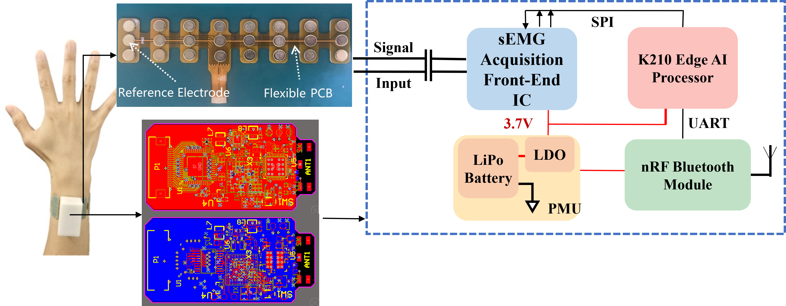

sEMG-Based Gesture Recognition Smart Bracelet
Jul. 2022 – May 2023

Overview
This project developed a wearable sEMG system for recognizing hand gestures from weak wrist muscle signals.
Signal Processing
The signal-processing workflow addressed low-amplitude wrist sEMG signals and noise to support robust hand-gesture recognition.
Hardware and Learning
The wearable platform combines miniaturized sEMG acquisition hardware, a bracelet-electrode array, and a machine-learning gesture-recognition model.
My Contributions
I was responsible for miniaturizing the acquisition-circuit design and fabricating the bracelet electrodes. I also contributed to the machine-learning gesture-recognition model and participated in experimental testing and performance evaluation.